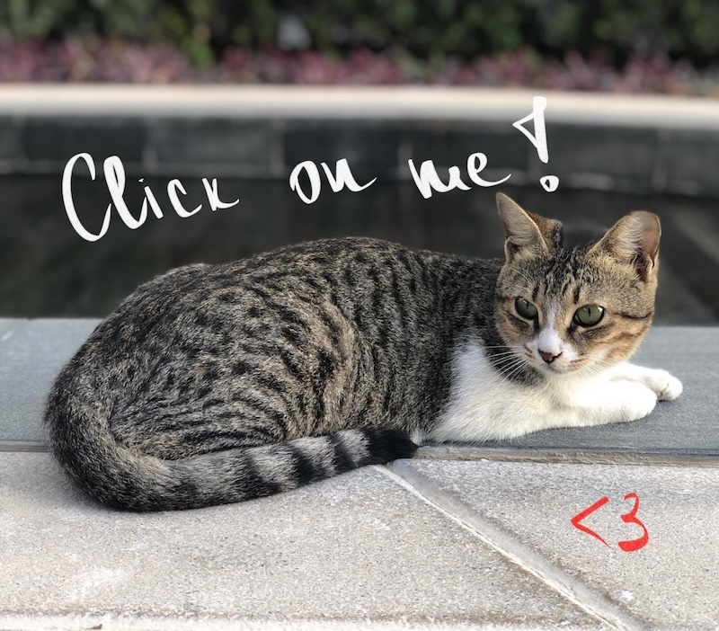

One unique and charming aspect of life at NYUAD is its community of campus cats. These feline residents have become an integral part of the campus culture, roaming freely and interacting with students, faculty, and staff. The presence of cats adds a sense of home and comfort to the university environment, helping to ease the stresses of academic life. The NYUAD community, in turn, has embraced these animals, setting up feeding stations, arranging veterinary care, and even creating social media accounts to share their stories. This harmonious coexistence reflects the university's broader values of compassion, community engagement, and respect for all living beings.
The Campus Cats initiative at NYUAD not only enhances campus life but also serves as an example of responsible pet ownership and animal welfare in an urban setting. Volunteers from among the student body and staff oversee the well-being of these cats, ensuring they are healthy, vaccinated, and neutered. This initiative demonstrates NYUAD's commitment to sustainability and environmental stewardship, extending its educational mission beyond human concerns to encompass the welfare of local wildlife and pets. In doing so, NYUAD strengthens its role as a leading institution that values inclusivity, care, and respect for life in all its forms.
Join our journey on Instagram
To delve deeper into the stories of our campus cats, explore the articles below: